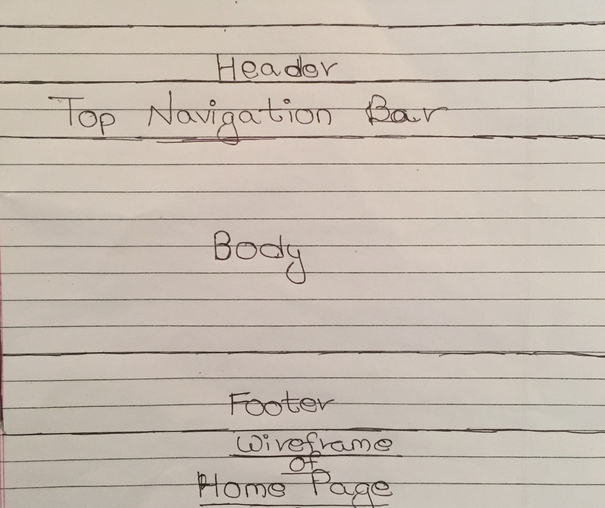
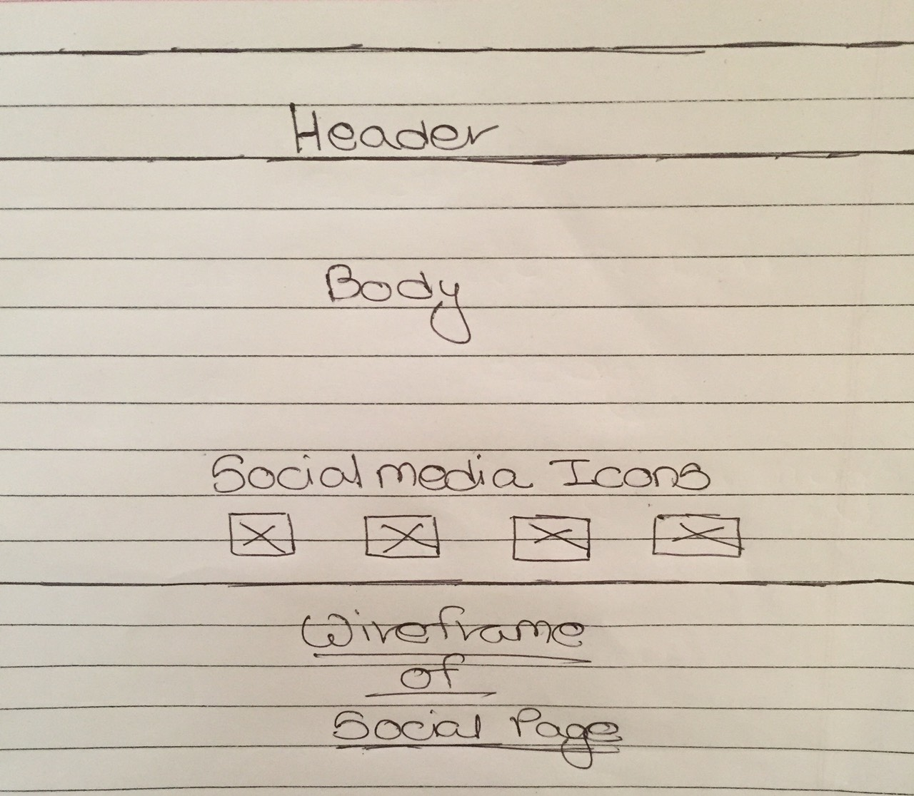

|

|
CSY1018
Web Development
Assignment 1
Semester 1 2017/18
|
|
Words:
|
AS1- CV Website
(design & implement)
(2,500 words or equivalent)
|
|
Weighting:
|
50%
|
|
Credit Value:
|
20 credits
|
|
Learning Outcomes Assessed:
|
a, b, c, d, e, h
|
|
Submission date:
|
Sunday April 22nd 2018, 23:59
|
|
Feedback and Grades due:
|
4th February 2018
|
|
Module Leader:
|
Ganesh Khatri
(ganesh.khatri@nami.edu.np)
Liz Coulter-Smith
(liz.coulter-smith@northampton.ac.uk)
|
|
Electronic copy available:
|
NILE
|
Introduction:-
This is the assignment of Web Development where six pages are created using HTML and CSS. As per the given assignment criteria pages should be made responsive as well because in today’s world more percentage of people has shifted towards smart phones. For the webpage to make it responsive task was fully dependent upon the course of twelve weeks. Pages were created according to the assignment condition. Thus, pages were created as Home, About Me, Contact, Social, C.V, Model_GP. Navigation bar is created using flex. Coding was done taking reference from different Website. JavaScript was not included but the page Contact form is created using java script.
Wireframes:-
As Wireframes is also known as a blue print. At first while starting our assignment all six pages of wireframes are created and with the help of wireframes designing of the six html pages is done. The wireframe of the website in images is given below.

Wireframe of Home Page.

Wireframe of about me Page.

Wireframe of Contact Page.

Wireframe of CV page.

Wireframe of Social page.
HTML and CSS Validation

The above picture is the Html validation of home page.

The above picture is the CSS validation of home page.

The above picture is the Html validation of About me page.

The above picture is the CSS validation of About me page.

The above picture is the Html validation of Contact page.

The above picture is the CSS validation of Contact page.

The above picture is the Html validation of CV page.

The above picture is the CSS validation of CV page.

The above picture is the Html validation of Social page.

The above picture is the CSS validation of Social page.
Conclusion
Finally, six webpage has made using HTML and CSS. During the Twelve week of course I am able to design a webpage in a very good way. While making the website I am able to use the flex and its properties in a good way. In the Contact page map was embedded using Google map. Color combination in the webpage is quite satisfactory.
Although webpage created was satisfactory but also the same flaws were found while creating webpage. In every page Social media icon was put successfully. Webpage, HTML and CSS was validated using, w3schools webpage validator, HTML validator and CSS validator.
- W3Schools Online Web Tutorials. 2018. W3Schools Online Web Tutorials. [ONLINE] Available at:https://www.w3schools.com/. [Accessed 25 June 2018].
- Ready to check - Nu Html Checker. 2018. Ready to check - Nu Html Checker. [ONLINE] Available at:https://validator.w3.org/nu/#file. [Accessed 25 June 2018].
- The W3C CSS Validation Service. 2018. The W3C CSS Validation Service. [ONLINE] Available at:https://jigsaw.w3.org/css-validator/#validate_by_upload. [Accessed 25 June 2018].
- www.javatpoint.com. 2018. Tutorials - Javatpoint. [ONLINE] Available at: https://www.javatpoint.com/. [Accessed 25 June 2018].
-